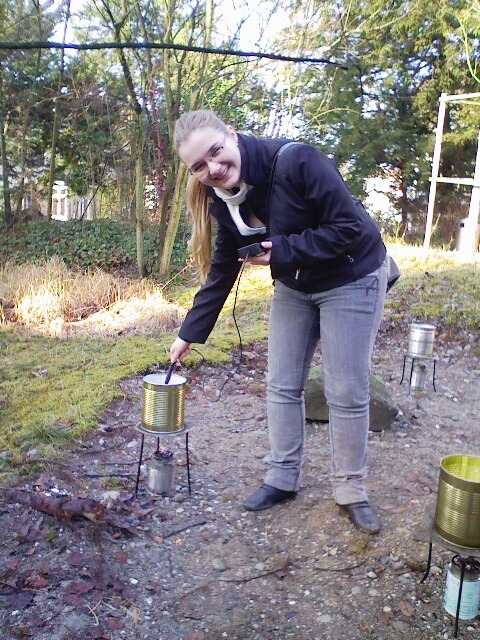
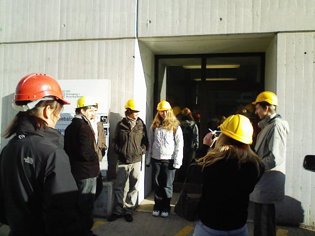

Naturwissenschaftliche Blockwoche 2008
In der Woche vom 4. bis 9. Februar 2008 führten wir (MNG Rämibühl) eine naturwissenschaftliche Blockwoche zum Oberthema Energie durch. Die Schülerinnen und Schüler der dritten Klassen besuchten Plenarveranstaltungen sowie Podiumsdiskussionen. Jede Gruppe führte zwei Projektarbeiten durch.
Unser (M. Bott, G. Plaza, M. Lieberherr) Projekt "Energie aus Abfall" war inspiriert von folgender Zeitungsmeldung:
Kompogas AG
"Mit 1 Kilogramm Speiseresten kann man 1 Kilometer Auto fahren, 1,45 Stunden fernsehen oder 6 Stunden das Licht brennen lassen. Laut dem Paul-Scherrer-Institut (PSI) liefert 1 Tonne Küchenabfall heute 510 kWh Energie. Und so funktioniert's: Im einem Trockengär-Reaktor vergärt das zerkleinerte Biogut unter Sauerstoff-ausschluss bei 55 bis 60 Grad und mit Hilfe von Mikroorganismen während 15 bis 20 Tagen. Der Prozess hinterlässt Methangas (..)" (NZZaS, 1. Juli 2007, S. 39)
Wir haben z.B. den spezifischen Heizwert von Abfall zu messen versucht und besichtigten die Kehrichtverbrennungsanlage Josephstrasse.

Messung des Heizwerts mit einem primitiven Kalorimeter
Heizkraftwerk Josephstrasse, Zürich

Führung durch die Kehrichtverbrennungsanlage
26. März 2008 / Martin Lieberherr